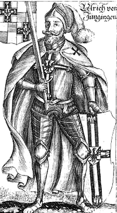

Grand Masters of the Teutonic Order

Ulrich von Jungingen
Grand Master (1393–1410)
Cause of Death: Killed in Battle
Location: Battle of Grunwald, Poland
Achievements
- Expanded fortifications across Prussia
- Strengthened Baltic naval presence
- Forged alliances with Holy Roman Empire factions
- Oversaw military reforms and knight training
Defeats
- Crushing defeat at Battle of Grunwald (1410)
- Loss of strategic castles in Poland-Lithuania border
- Internal dissent among knight ranks
- Failed diplomatic overtures to Papacy

Winrich von Kniprode
Grand Master (1351–1382)
Cause of Death: Natural Causes
Location: Marienburg Castle
Achievements
- Longest-serving Grand Master in Order history
- Led successful campaigns against Lithuanians
- Established knightly tournaments and discipline
- Expanded Order’s influence in Livonia
Defeats
- Failed to fully subjugate Samogitia
- Periodic revolts in conquered territories
- Loss of key supply routes during Baltic winters
- Diplomatic tensions with Hanseatic League

Siegfried von Feuchtwangen
Grand Master (1303–1311)
Cause of Death: Illness
Location: Malbork, Poland
Achievements
- Relocated Order HQ to Marienburg Castle
- Strengthened ties with German nobility
- Initiated construction of key Prussian fortresses
- Reorganized command structure for efficiency
Defeats
- Failed to prevent Livonian Order fragmentation
- Losses in early Lithuanian border skirmishes
- Financial strain from relocation efforts
- Limited success in crusading recruitment